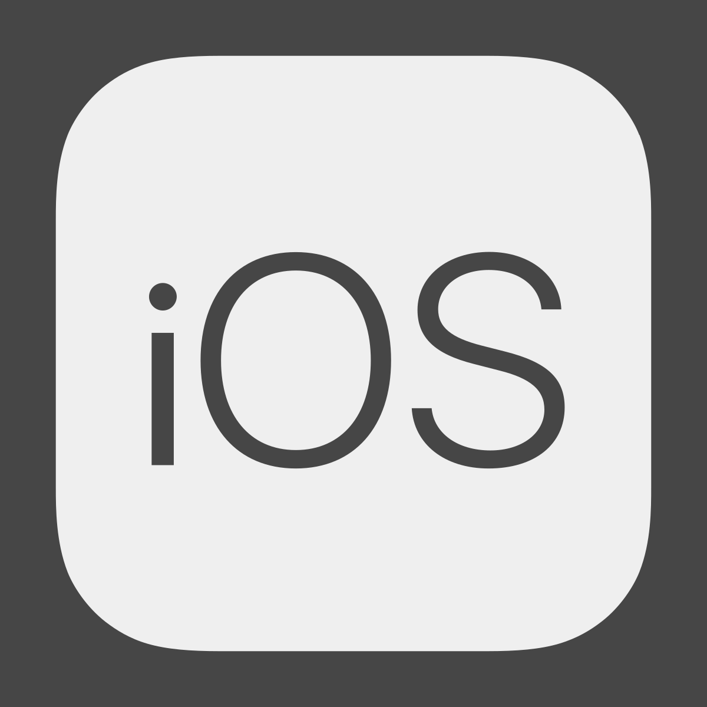
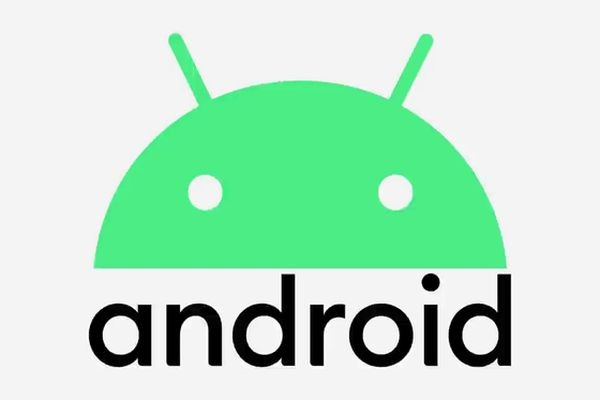
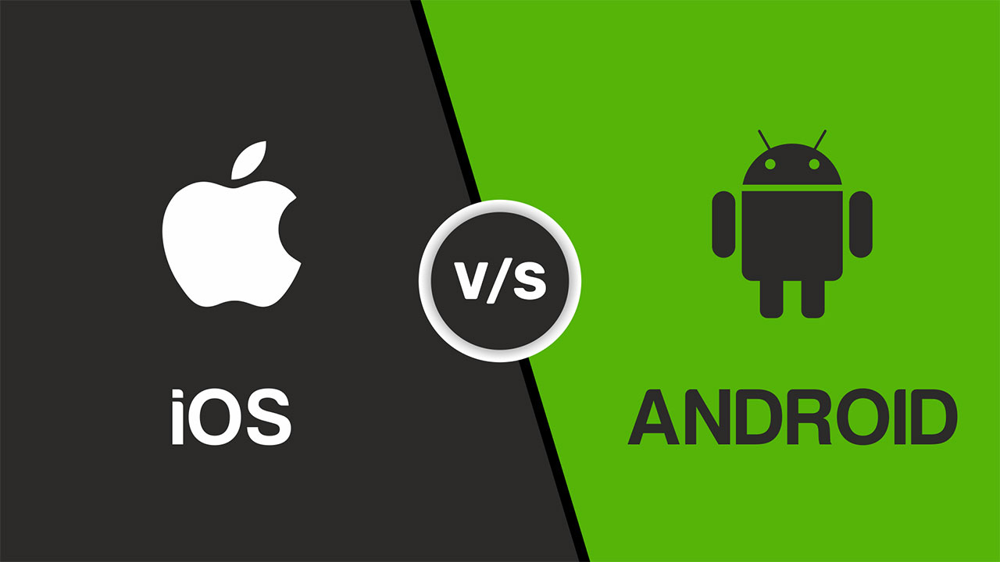

iOS, розроблена Apple, займає значну частку ринку в США та на інших розвинених ринках. Вона відома своїм високоякісним, стабільним та безпечним користувацьким інтерфейсом. Екосистема Apple забезпечує безшовну інтеграцію всіх пристроїв, включаючи Mac, iPad, Apple Watches та Apple TV, створюючи гармонійне середовище для користувачів.
Android, яку очолює компанія Google, займає домінуюче положення на світовому ринку. Ця операційна система користується популярністю в багатьох країнах, що розвиваються, завдяки своїй гнучкості та широкому вибору пристроїв. Android пропонує користувачам можливість налаштування та персоналізації, що робить її ідеальним вибором для тих, хто хоче контролювати кожен аспект свого пристрою.
Кожна з цих систем має свої переваги та недоліки. Вибір між iOS та Android з точки зору продуктивності та ефективності залежить від вподобань та потреб користувача, а також від конкретних моделей пристроїв. Важливо пам'ятати, що найкращий вибір - це той, який відповідає вашим особистим потребам та вподобанням.
